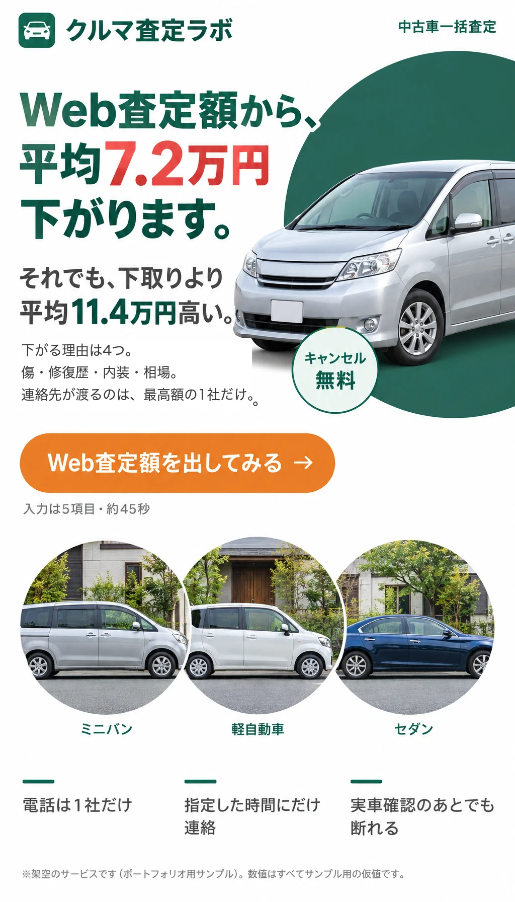
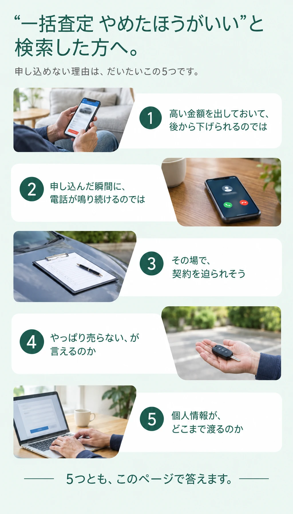
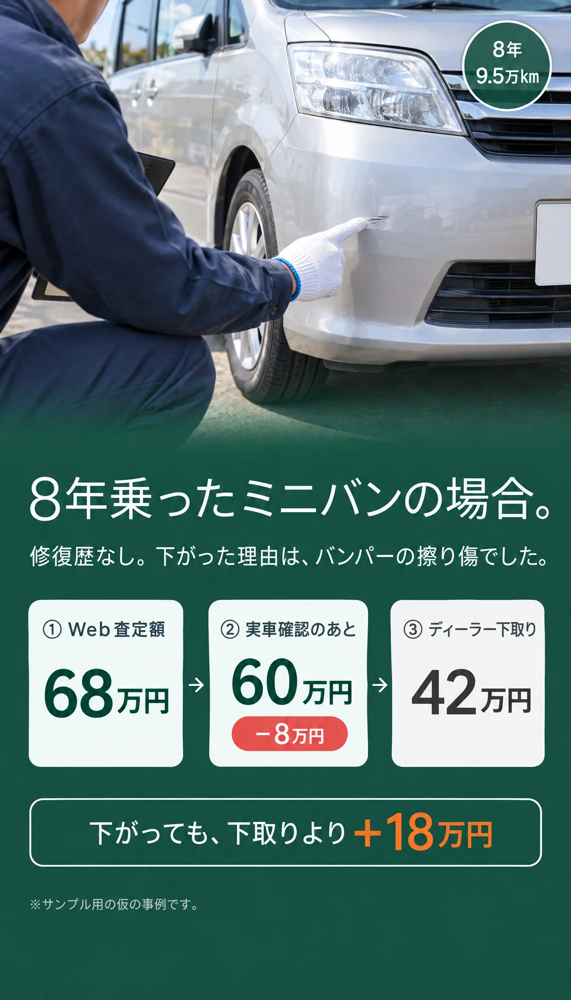
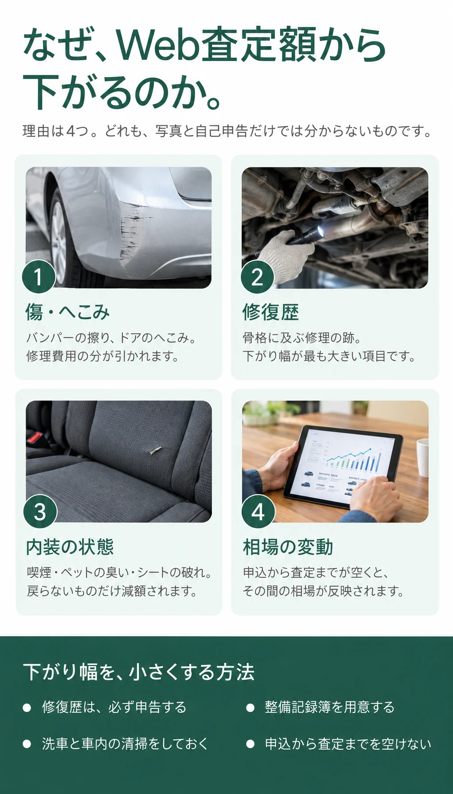
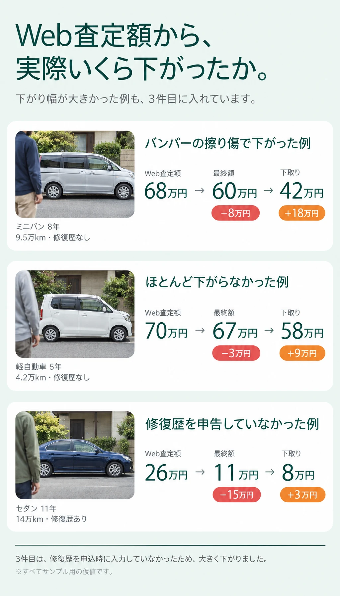
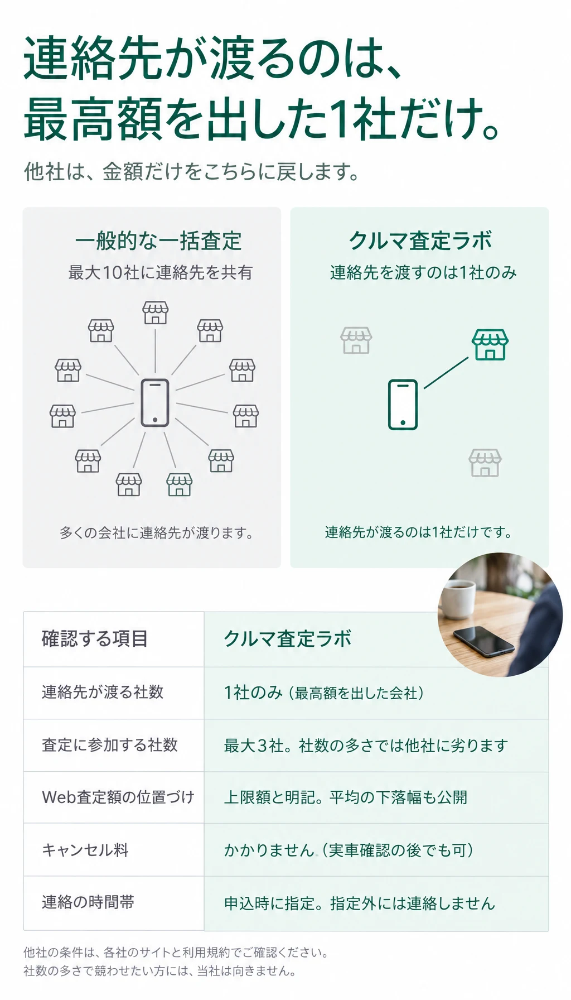
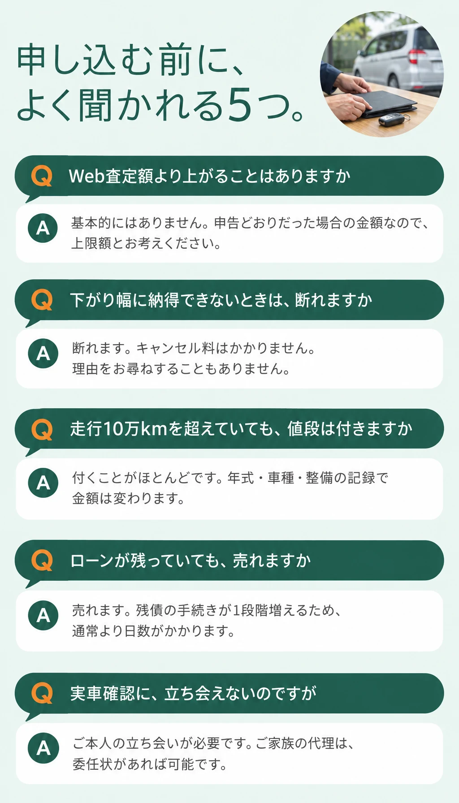
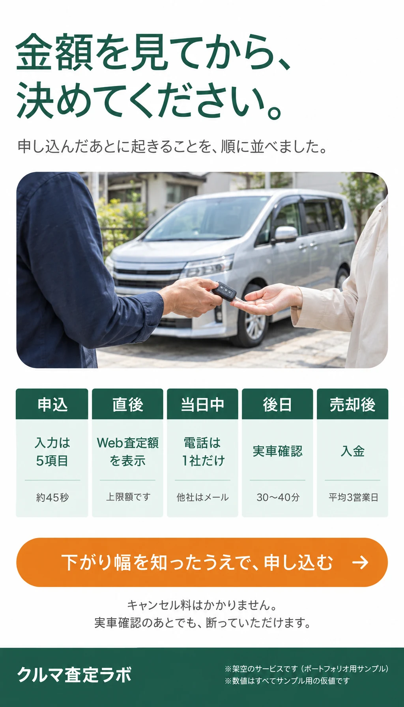

Web査定額を出してみる






下がり幅を知ったうえで、申し込むWeb査定額を出す
入力は5項目（車種・年式・走行距離・修復歴の有無・ご連絡先）、約45秒です。
修復歴は正直にご入力ください。そのほうが、後で下がりません。
このページはポートフォリオ用のサンプルのため、申込フォームはつながっていません。
実案件では、ここに【申込フォームのURL】が入ります。
売却が決まったら、用意していただくもの
申込の時点では不要です。
| 普通車 |
|
|---|---|
| 軽自動車 |
|
| ローンが 残っている場合 | 残債を精算して名義を移す手続きが1段階増えます |
| 入金まで | 書類が揃ってから平均3営業日 |
会社概要
| 商号 | 株式会社クルマ査定ラボ |
|---|---|
| 所在地 | 〇〇県〇〇市〇〇1-2-3 |
| 設立 | 2016年6月 |
| 代表者 | 代表取締役 〇〇 〇〇 |
| 資本金 | 2,000万円 |
| 事業内容 | 中古車査定の仲介サービスの運営 |
| 古物商許可 | 〇〇県公安委員会 第〇〇〇〇〇〇号 |
| 個人情報 | 査定および売却手続きの目的にのみ使用します。上記以外の第三者に提供しません |
※上記はすべて架空の設定です。実案件では、実在の登記情報・古物商許可番号が入ります。
※写真はすべてAIで生成したイメージです。実在の人物・車両ではありません。